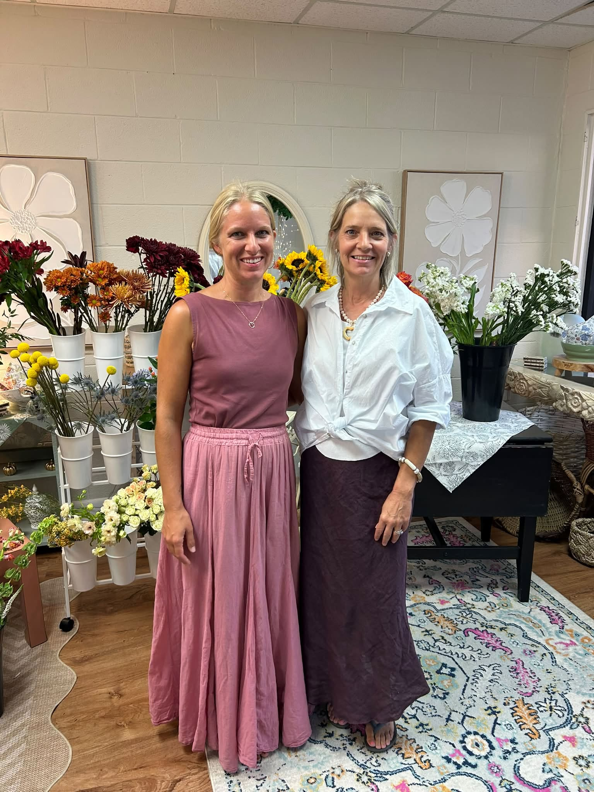

Who We Are
Welcome to Petals! We're a mother-daughter-owned flower shop in Atlantic Beach, NC, founded by Rhonda Privette and her daughter, Nichole Scarboro Davis. Whether you're stopping in to create your own bouquet at our flower bar, picking up a fresh, ready-made arrangement, or ordering something custom for a special someone, we're here to help you find the perfect blooms. We also offer floral arrangements for weddings, celebrations, and other special events. At Petals, we believe life is better with flowers, and we can't wait to share a little floral joy with you!
Visit Us!
407 Atlantic Beach Causeway, Suite 14, Atlantic Beach, NC 28512